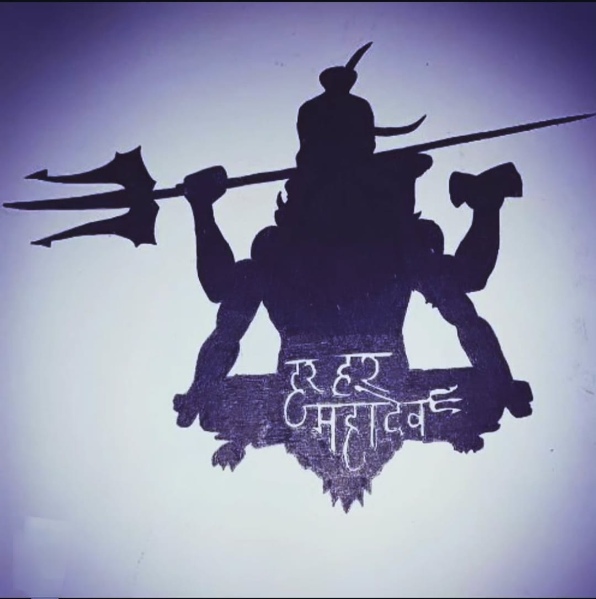

🕉 Lord Shiva

Medium: Pen Art
Year: 2021
This Artwork Represents Lord Shiva In A Detailed Pen Art Style,
Lord Shiva Represents The Supreme Power Of Transformation, Balance, And Inner Peace. He Is Known As The Destroyer Of
Negativity And The Creator Of New Beginnings, Teaching That Endings Are Just The Start Of Renewal. With The Crescent
Moon On His Head And The River Ganga Flowing From His Hair, He Symbolizes Control Over Time And The Flow Of Life.
His Calm Expression Reflects Deep Meditation, While His Third Eye Reminds Us Of Higher Awareness And Truth. Lord
Shiva Inspires Devotees To Rise Above Ego, Embrace Simplicity, And Seek Strength Through Inner Stillness And
Spiritual Wisdom.